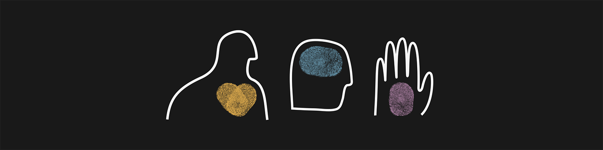
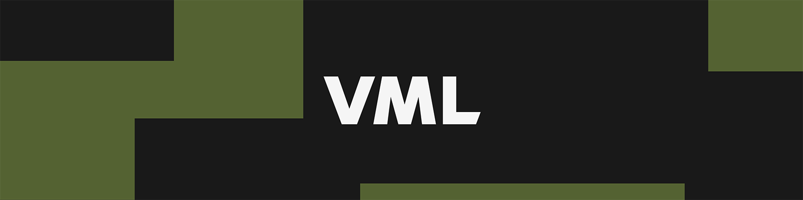

08–12 — Aplicações
Onde a marca aparece.
Ambientes físicos, headshots, social media, templates de apresentação e vídeo institucional — como as regras de logo, cor e tipografia se aplicam em cada aplicação concreta.
08 · Ambientes físicos
Escritórios devem reforçar Human/Confident/Premium, mas o design de marca não deve definir sozinho a estética do espaço — deve refletir também a cultura da região/equipe.
- Entrada/recepção: branding simples, limpo e proeminente, em preto e branco.
- Spark: uso secundário, sem exagero de escala.
- Preferir arte emoldurada de alta qualidade a murais gráficos genéricos.
- Reservar uma área para a filosofia Human First.
09 · Headshots
Padrão único para uniformidade — desenhado para ser alcançável com smartphone ou webcam, sem exigir estúdio.
| Coloração | Preto e branco |
| Fundo | Branco natural |
| Enquadramento | Cabeça e ombros, topo da cabeça não cortado |
| Orientação | Retrato (vertical) |
| Iluminação | Natural e uniforme, sem sombras duras |
Dica prática: "portrait mode: high-key light mono" do smartphone, ou efeito de fundo do Teams.
10 · Social Media
Headers pré-desenhados para Facebook, LinkedIn e X — 7 variantes de fundo cada: corevalues, darkbronze, darkgold, darkgreen, darkplum, humanfirst_black, humanfirst_white.


- Peça não-Human First: escolher uma única variante de cor por peça/campanha, nunca misturar famílias.
- Peça Human First: usar
humanfirst_blackouhumanfirst_whiteapenas. - Não existe variante "darkblue" nos headers — se precisar, sinalizar como lacuna, não gerar por conta própria.
11 · Templates de apresentação
| Template | Uso | Formato |
|---|---|---|
| Deck geral | Uso comum — 2 masters (Light/Dark), 42 layouts | 4:3 widescreen 13.33"×7.5" |
| Cred deck global | Pitches / credenciais da agência | 26.67"×15" |
| Case Study | Estudo de caso (inclui layout "Human First") | 4:3 widescreen 13.33"×7.5" |
| Keynote | Equivalente Apple ao template geral | — |
| Letterhead | Papel timbrado — usar versão A4 para Brasil | A4 / padrão |
Arquivos-fonte completos (.pptx/.key) não estão neste manual — estão no brand kit completo (OneDrive). Manifesto textual de todos os nomes de layout em agente/11_templates_apresentacao.md.
12 · Vídeo institucional
| Finalidade | Regra de uso |
|---|---|
| Ident de marca (logo animado) | Abertura/vinheta de qualquer vídeo VML. Não recriar a animação. |
| Fundo animado | Loop atrás de texto/logo — uma família de cor por vez. |
| Supergraphic animado | Mesma lógica do supergraphic estático, em movimento. |
| Vídeo "Anthemic" (Human First) | Ver regras de flexibilidade por seção em Human First. |
| Brand sizzle reel 2025 | Material de referência/institucional geral. |
Nenhum arquivo de vídeo está neste manual — confirmar acesso ao brand kit completo antes de montar qualquer vídeo.